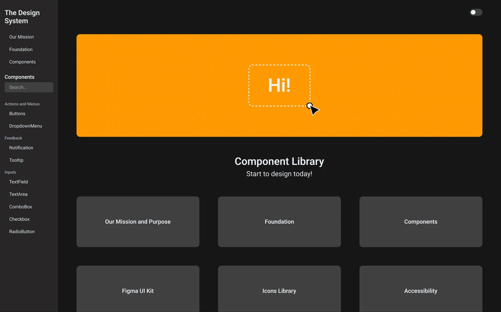
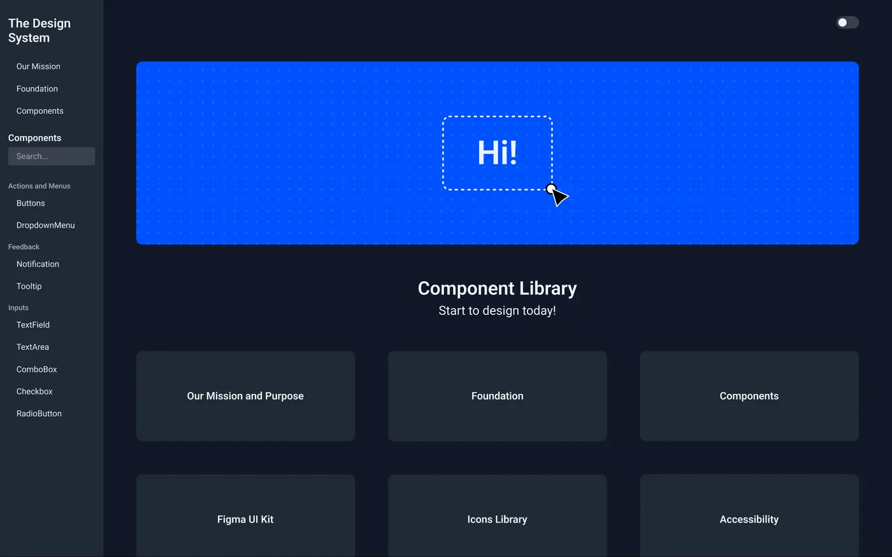
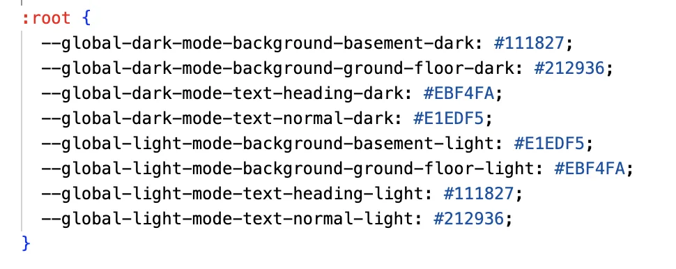
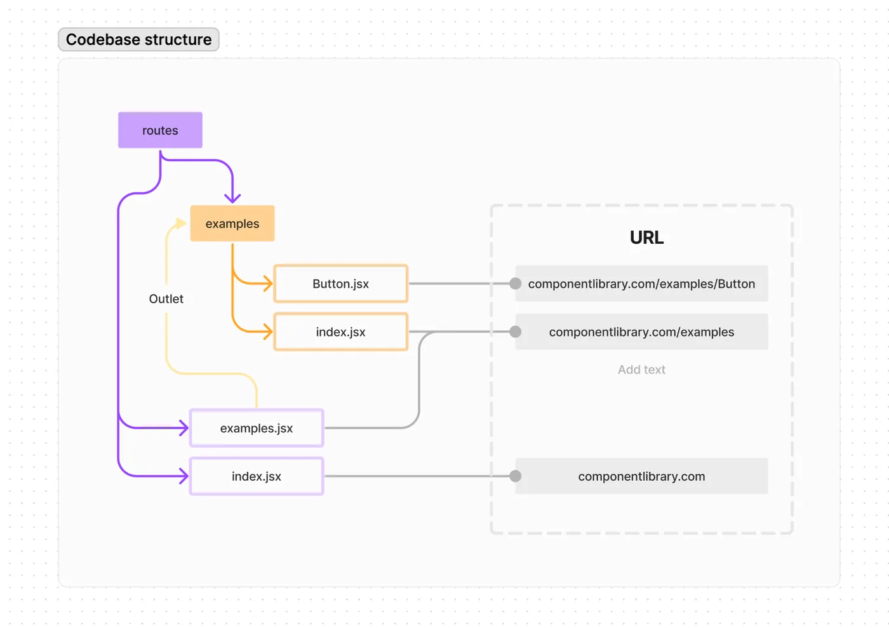

Design System Template
Every company grows differently, and its design tends to get messier along the way. For my bachelor project I built a design system template a team can reuse and scale, so designers and engineers share one source of truth and keep talking to each other from day one.
Read the case studyClose the case study
The power of design systems: the connection between design and development
Bachelor thesis, written with input from designers and developers at Humio
The problem
As a company grows, its designers and developers drift apart. Decisions live in people's heads, the same questions get answered again and again, and a rebrand or an acquisition means restyling everything by hand. A design system fixes this, but building one from scratch takes time most small teams don't have.
The questions
- How can a digital tool close the knowledge gap between designers and developers and give them a shared language?
- How can it automate the repetitive work on both sides?
What I built
- Design tokens that sync themselves. A designer changes a colour in Figma, the change is pushed to GitHub, and it becomes CSS variables and Tailwind classes in the code. Everyone ends up using the same names for the same things.
- Light and dark mode throughout, driven by the same tokens.
- A component library that shows every component in all its states and variants, on different backgrounds, with a page template to copy for each new one.
- Navigation that builds itself from the list of components, grouped by category and searchable.
- Foundation pages ready to fill in: colours, typography, spacing, a searchable icon library, accessibility, branding and tone of voice.
How I got there
I compared the design systems of Atlassian, Google, IBM and Apple, studied Storybook, and used industry survey data to decide what a design system has to contain.
Built with
React, Remix, Tailwind CSS, Figma, the Figma Tokens plugin, Style Dictionary and GitHub.
What I'd add next
Automated tests on every pull request, GitHub Actions that regenerate the styles when tokens change, and copyable code snippets for each component.



